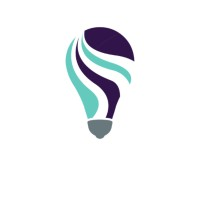
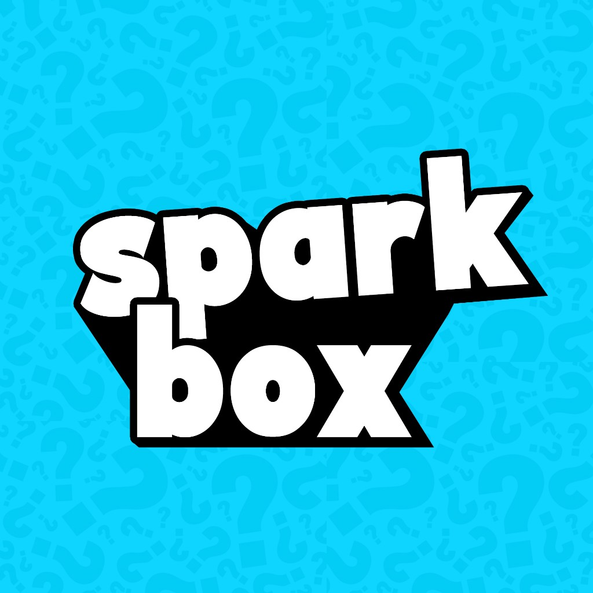

University of Leeds
BSc Computer Science
Sept 2025 – June 2028

Computer Science · University of Leeds
I study Computer Science at Leeds. If something winds me up enough, I will try to build the version I actually wanted. That is why I love CS — every day I find out the thing I wanted to do is something I can actually learn and do, and I only get better the more I keep going.
BSc Computer Science
Sept 2025 – June 2028
Intern · Dubai
Aug 2026 – Present

Data Analyst Intern · Dubai & Karachi
Aug 2025
Personal file vault
2026
Why
What I did
What I learned

Party games for phones
2026
Why
Me and my friends were always playing social games. We hated it when a game made everyone connect on different phones for something that did not need that. And every game we actually played sat in its own app, even though they were all party games.
What I did
I took it into my own hands and built the party-game web app I wanted. Spyfall, Mafia, Impostor, and more live in one place. I designed the brand in Photoshop and shipped the whole thing myself — Cursor, GitHub, Vercel, Supabase. We use it day to day.
What I learned
University of Leeds
2025